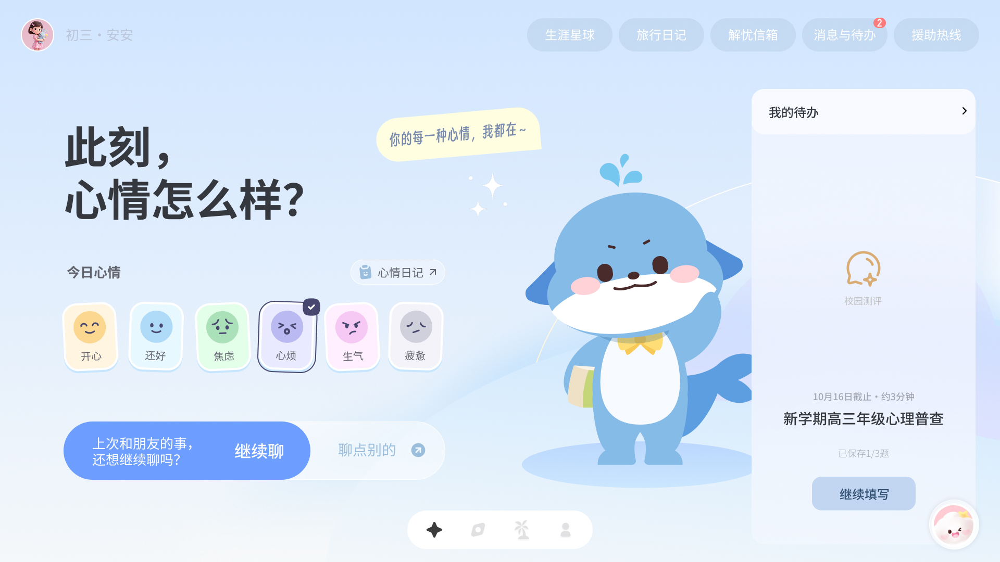
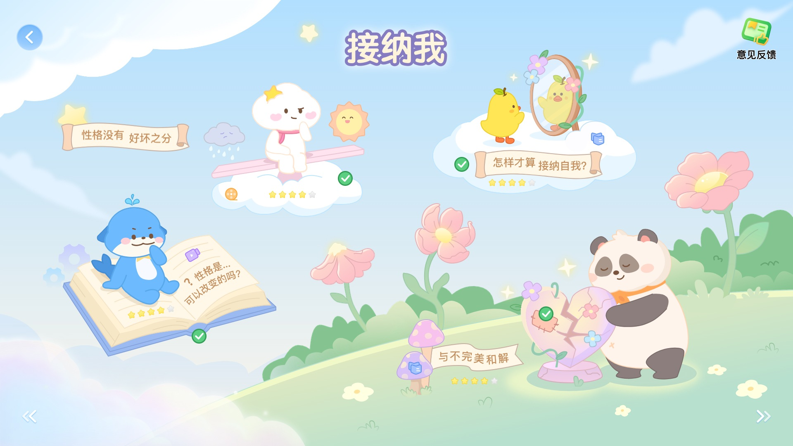
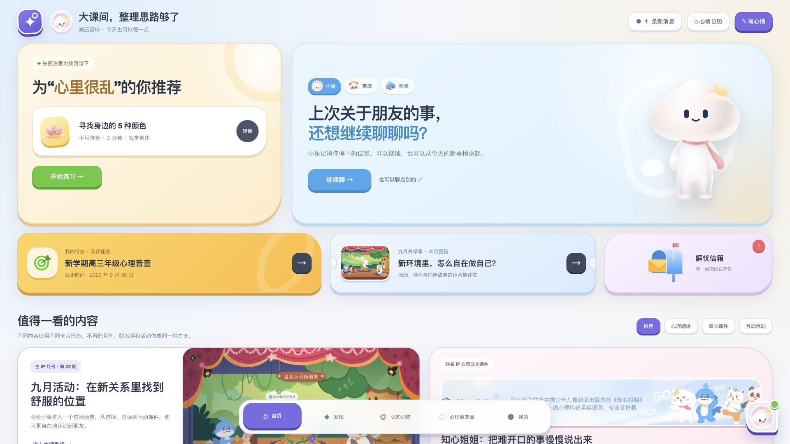
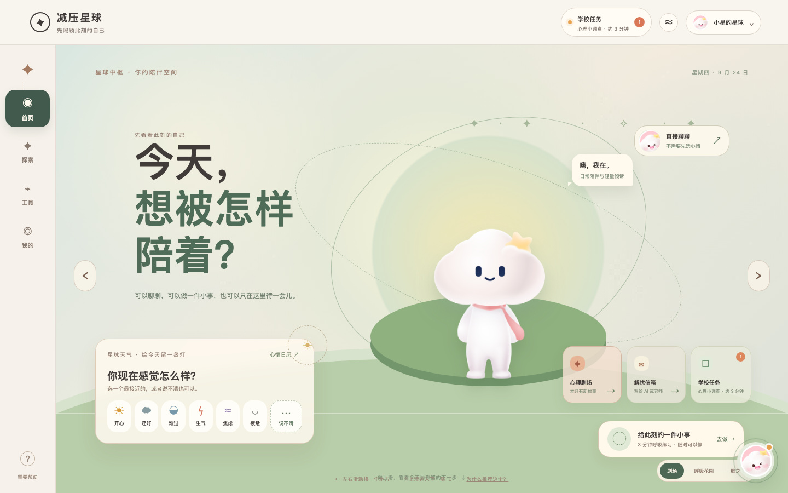
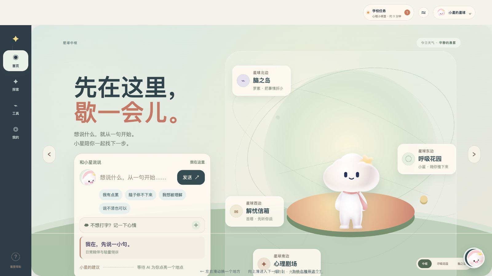
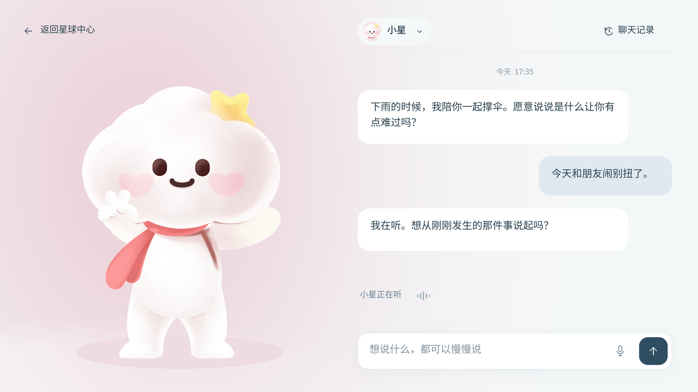
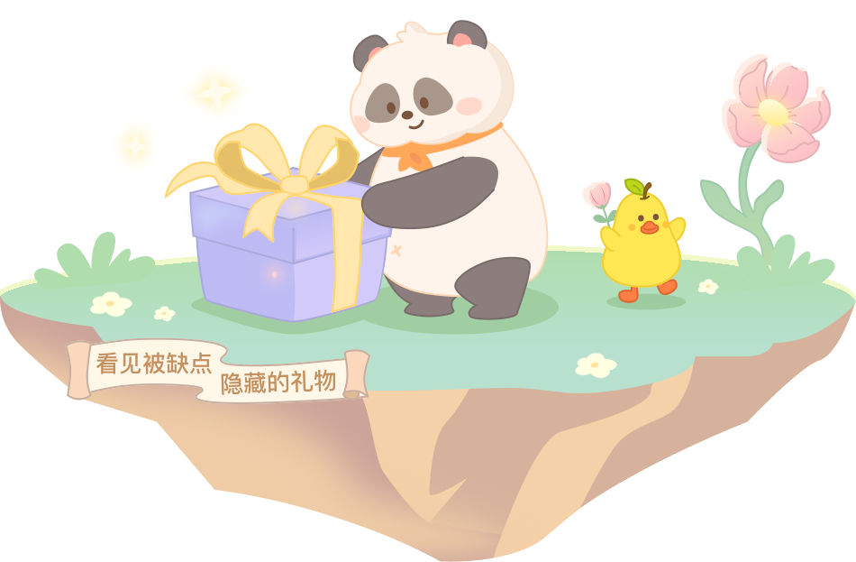

两个项目，一条完整的设计链路


研究驱动设计
产品诊断、竞品机制、体验策略
扩展交付边界
从交互 / UI 到 Lottie 与 H5
缩短协作链路
月刊每期整体约省 1 周 · 本人估算
01减压星球
把分散的功能，
连接成低压力的支持体验。
学生只有一段课间，也可能暂时说不清情绪。我从产品诊断、竞品机制和体验地图出发，让表达、陪伴、行动和回访形成连续关系。
研究与设计已形成 · 原型待评审
我的职责
产品与体验判断、迁移取舍、情感化设计、分版本决策
AI 协作
Claude 补充机制与边界；Codex 整合资料、地图、原型与检查
成果范围
20 份产品专题 · 5 份独立竞品资料 · 双体验地图 · 3 套测试工具

01 · 方向探索
02 · 首页结构
03 · 心情表达
04 · 聊天细节Q3 研究成果与后续深化
产品、体验和创新，
都有可打开的研究成果。
从产品全貌、竞品机制到学生体验，再到情感化、系统规范与验证准备。我把研究收敛为具体设计判断，也保留报告与工具，让成果可以被逐项查看。
收录 Q3 使用的 6 月研究基础、7—9 月阶段成果与 10 月后续深化。历史提案、当前决策、设计推演和测试准备分别标注；文件数量说明成果范围。
我的产品判断
研究改变了什么？
现状：功能各自完整
心情记录
AI 对话
心理内容
认知训练
写信求助
学生仍需自己判断：从哪里开始、做完去哪里。
我的方向：连续的支持关系
- 表达状态
- 被接住
- 小行动
- 被看见
- 再续接
每次使用可以只完成一小段，保留选择与结束的自主权。
场景 × 体验设计
换一个学生场景，看看设计如何回应。
课间想快速表达，不想长聊
场景推演 · 轻度波动
现状断点我的设计目标
- 两个主入口同等抢眼主行动清楚，也可直接聊天
- 记录后缺少下一步允许说不清，避免重复选择
- 回访仍需重新判断轻量完成，回看不催打卡
预期体验价值低压力表达，少做重复选择
设计目标；状态承接待验证。当前断点综合界面事实与体验分析。现在就想被听见，不想自己分流
场景推演 · 明显难受
现状断点我的设计目标
- 两个 AI 入口要自己理解不用打卡，随时找伙伴
- 角色与会话边界不透明先回应，再自选支持深度
- 切换模块后伙伴消失讲清边界，连到真实支持
预期体验价值难受时少判断，支持不中断
设计目标；对话策略与支持待接通。当前断点综合界面事实与体验分析。想找到适合自己的内容或练习
场景推演 · 探索成长
现状断点我的设计目标
- 内容、工具、服务属性混杂按需要与时长找到资源
- 资源分散在多个模块保留月刊、训练、通信特色
- 成果留在模块，续接不清完成有解释，下次能继续
预期体验价值更易找到内容，看见行动意义
设计目标；跨模块记录待接通。当前断点综合界面事实与体验分析。知道为何做、谁可见、做完会怎样
场景推演 · 学校任务
现状断点我的设计目标
- 学校任务与自选支持混杂任务独立呈现，写清来源
- 用途、时长、可见范围不清开始前说明用途与可见范围
- 完成后意义与支持承接不足非评价反馈，允许结束或求助
预期体验价值少猜用途与隐私，保留自主权
设计目标；任务状态与结果规则待接通。当前断点综合界面事实与体验分析。依据四场景 × 六阶段双体验地图（2026.09.20）。感受与需要是场景推演，升级动作是设计目标；真实用户效果另行验证。
竞品研究 × 专业取舍
我借鉴机制，也判断什么不该照搬。
参考机制
首页给清楚的主要行动
我的取舍
借层级，保留 IP 与业务
设计输出 · 首页启动
首页主区 + 分层入口
参考机制
用情绪词帮助表达
我的取舍
允许说不清，避免词表过重
设计输出 · 情绪入口候选
快捷状态 + 自主补充
参考机制
小行动获得伙伴反馈
我的取舍
保留回应，不复制强养成
设计输出 · 轻完成反馈
轻完成 + 回看，离开不受罚
参考机制
先接住表达，再温和收束
我的取舍
亲和有边界，允许结束
设计输出 · 伙伴回应
短回应 + 自选下一步
参考机制
记忆可见，安全可达
我的取舍
可拒绝、可删除，不绑定关系
设计输出 · 后续能力设计
记忆控制原则 + 真实支持入口
收敛为六条设计策略
点击展开设计含义
给下一步
首页明确当前行动，让学生更容易开始。
允许说不清
表达不清也是有效状态，补充原因保持自愿。
先接住，再收束
伙伴先回应感受，再给可选择的小行动。
记忆可控
让学生知道记住了什么，并能拒绝或删除。
完成被看见
结束反馈与回访承接成为体验的一部分。
安全优先
明确能力边界，危险情境优先真实支持。
体验与情感化创新
把情感价值，变成具体的设计动作。
让表达有容错
允许说不清，原因保持可选。学生可直接聊天，也可独立记录；表达不是必填问卷。
已形成语义与交互决策 · 候选词待测试让角色参与支持
主 IP 承担持续陪伴，情境角色辅助共鸣。角色参与回应和行动，保持清楚的关系边界。
角色定位与陪伴策略 · 记忆待能力接入让功能成为能进入的场景
以横向地点、明确导航和场景动作探索 Pad 陪伴世界。先用固定场景与分层插画验证，控制成本。
后续概念提案 · 尚未用户验证-
当前优先 · 决策与原型已形成
复用现有能力
入口前置、首页权重、内容 / 工具 / 通信分层，先改善可发现性与完整路径。
-
后续迭代 · 依赖数据与服务
补齐支持链路
可控记忆、状态承接、真实资源与推荐、校内支持逐步接入。
-
长期探索 · 待验证与评审
验证陪伴世界
以完整场景旅程验证角色参与、空间导航与轻量反馈，再决定扩展。
已交付：研究、策略、设计决策、完整流程原型与验证工具。UX-03 是本地模拟的待评审样例，真实学生、业务接入与 Android 真机效果待验证。
阅读完整案例与证据02心理剧场
从插画与切图，
到能运行的角色体验。
面向 Android Pad 的心理成长内容，我将 AI 草稿、人工手绘、角色动效与 H5 串成一条交付链路，让研发接到可预览、可核对的体验。
阶段交付完成 · 整体月刊进行中
周期与角色
2026.09.15 起；动效判断、AI 协作制作、H5 与开发交接
阶段成果
8 组入口 Lottie、两页主题 H5 与离线资源
完成单元
人格配方独立动效已批准、发布并集成 H5
真实交付资源 · 发现礼物（enter3.3）

0.0 / 5.0 s
进入预览区自动播放，也可手动控制
可观看，也能交付
一段角色表演，
一个完整交付单元。
-
动作可读
熊猫发现礼物 → 蝴蝶结弹开 → 小黄鸭欢呼 → 花朵回应
-
视觉保真
19/19 特效项有真实输出引用，41/41 个简单动画属性首尾闭合
-
引用可追溯
源稿 → enter3_3.json → Android / H5 预览 → 离线交付包
2026.09.22 批准的真实 enter3.3 资源。此处为网页预览；目标 Pad / WebView 实机验收待完成。
工作流变化与项目提效
设计投入相近，交付职责更完整。
约省 1 周
每期整体交付 · 本人经验估算
原有方式
约 1.5 周我的设计与切图
人工手绘
→
切图
→
前端页面与交互实现
现在的方式
1～1.5 周设计侧全部交付
AI 草稿
→
人工手绘
→
Lottie + HTML
→
生产适配与业务接入
主要减少后续开发时间。研发重点承接生产环境适配、真实资源与业务接入；我还主动推进适配与交付模板，明确固定画布与宿主适配分工。
查看估算来源与质量口径
本人于 2026.10.13 确认，按同类月刊工作经验回顾估算。未提供逐期工时与旧开发绝对时长，不倒推总周期或节省比例。当前质量依据为原稿对照、特效与循环审查、热区与事件、离线完整性、资源一致性及桌面路径检查。
资源重构 · enter1.1
22 张图片 → 0
整画布 PNG 转为 22 个 Shape 图层
压缩体积 · 工作记录约值
111 → 63 KB
约减少 43.2%，沿用 2026.09.18 记录
交付可直接核对
HTML + Lottie + ZIP
正式资源、热区、接口、版本与离线包
质量与范围：资源数据描述文件成本；阶段检查覆盖桌面交互、离线与集成。整体月刊封版、完整业务接入及 Android 实机仍待完成。
阅读交付、质量与效率证据方法沉淀与复用
把一次实践，变成下次的起点。
协作与决策 AI 协同减负工具包 9 类场景指令 + 交接模板
将资料收敛、Flow 分析、多 AI 分工、审稿和交接整理成可调用的任务入口。让结论、依据与待判断事项留在同一份上下文里。
制作与验收 Lottie 与 H5 交付标准 1 个通用 + 3 个专项 Skill
把特效丢失、循环跳变、资源浪费与引用不一致转成审查门槛，维护适配探索、固定画布模板和正式发布链路。
知识与应用 个人 AI 大脑 项目证据 → 方法 → 开工调用
项目卡保存事实，方法卡保存判断，成果调用记录保存应用与反例。已有本人项目内使用证据；自动维护稳定性与团队独立复用仍待验证。
本人持续调用已有记录；同事独立复用人数、培训效果及工具包对应节省工时未形成验证数据。
正式认证标准对照
贡献与证据，一一对应。
30%
AI 驱动的问题解决能力
研究问题、生成方向、做出取舍并验证路径
AI 驱动的问题解决能力
研究问题、生成方向、做出取舍并验证路径
产品诊断与竞品机制收敛成六条策略、双体验地图、情绪与角色设计决策；AI 辅助原型与检查。关键专业判断和分版本决策由我把关。
减压星球完整证据
35%
跨岗位融合能力
产品策略、体验设计、角色动效与前端交付
跨岗位融合能力
产品策略、体验设计、角色动效与前端交付
从交互 / UI 延伸到 Lottie、H5、资源审查、离线打包与接入说明。独立人格配方动效具有批准、发布和 H5 集成记录。
心理剧场交付证据上方 30% / 35% / 35% 为正式标准的评审权重，用于组织证据；本文不代替评审，也不预测个人得分。